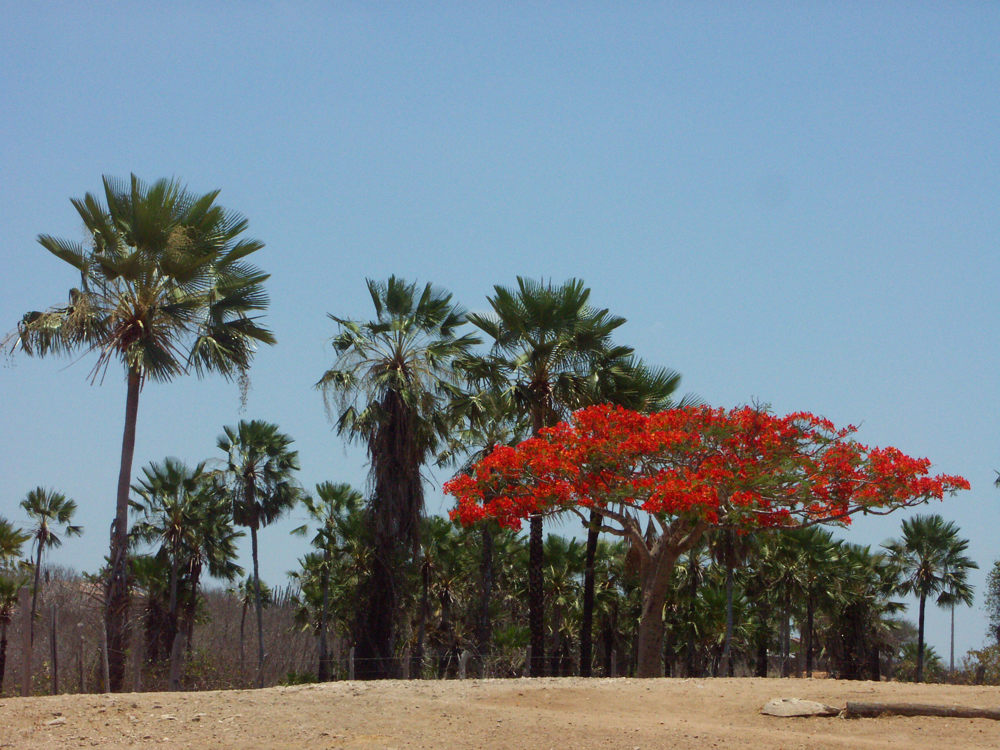
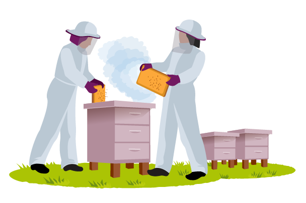
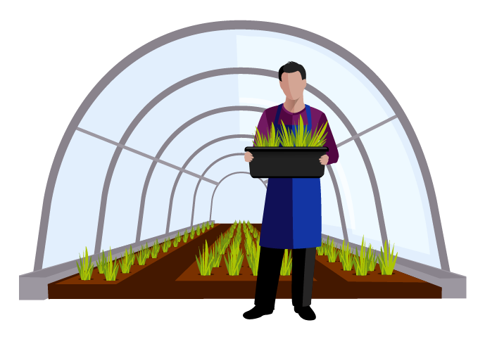

“
Somos uma iniciativa de agricultura familiar voltada para a produção de alimentos orgânicos e acreditamos que todas as pessoas devem ter direito à alimentação saudável sem o uso de insumos prejudiciais à saúde humana
”
Nossos produtos
Paçoca feita com gergelim orgânico, uma deliciosa fonte de nutrientes
Mel puro livre de antibióticos e aditivos químicos
Hortaliças frescas e saborosas direto para a sua mesa
Porque produzimos alimentos saudáveis?

Os alimentos comercializados normalmente são produzidos com o uso de químicos que causam danos à saúde humana e destroem o meio ambiente.
Preocupados com esse problema, nossos alimentos são resultado de uma produção sustentável baseada na proteção do meio ambiente e na saúde dos consumidores.
Por isso, não utilizamos agrotóxicos ou insumos químicos industrializados.
Comer bem é um dos maiores prazeres da vida e um privilégio que compartilhamos com todos que consomem nossos produtos.
Preocupados com esse problema, nossos alimentos são resultado de uma produção sustentável baseada na proteção do meio ambiente e na saúde dos consumidores.
Por isso, não utilizamos agrotóxicos ou insumos químicos industrializados.
Comer bem é um dos maiores prazeres da vida e um privilégio que compartilhamos com todos que consomem nossos produtos.
